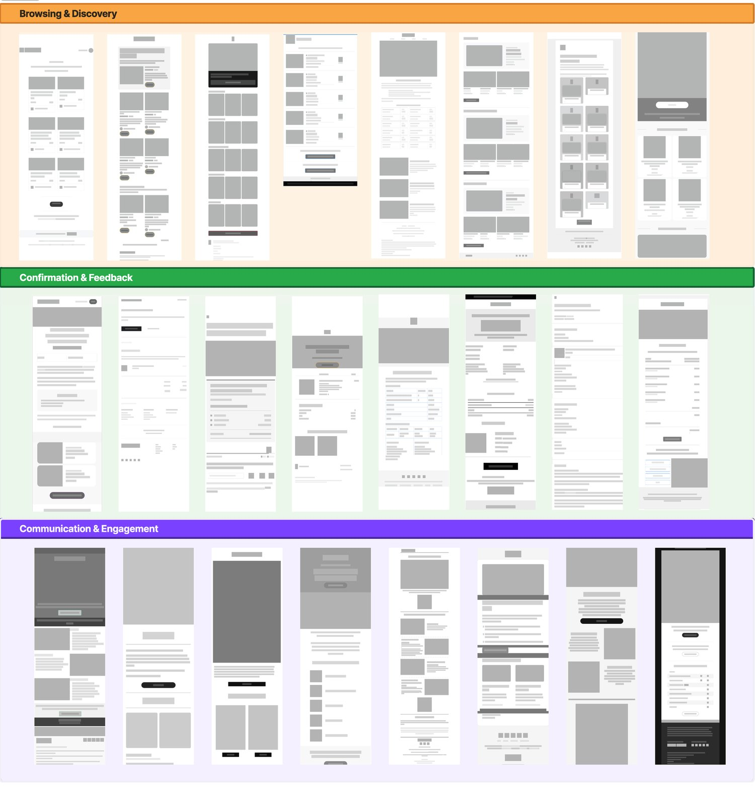
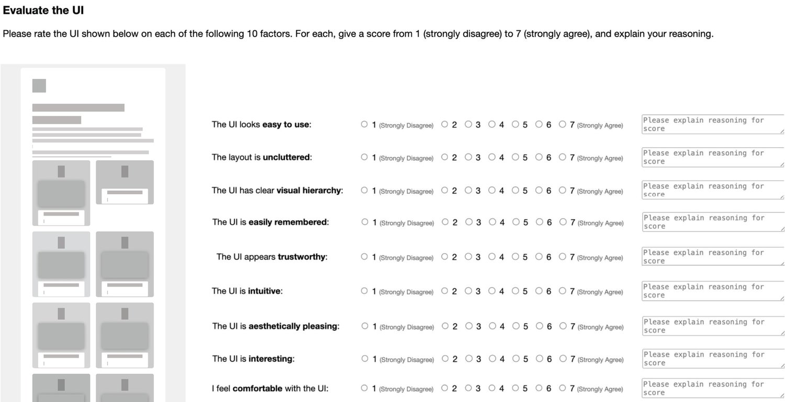
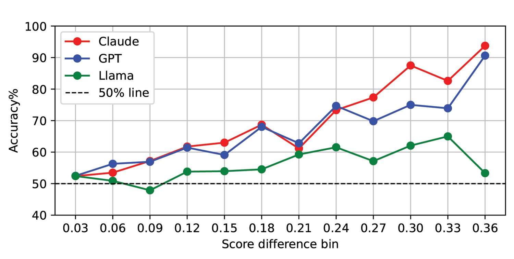
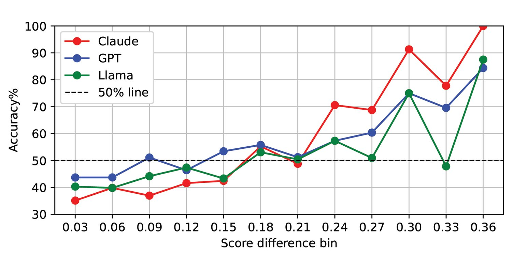
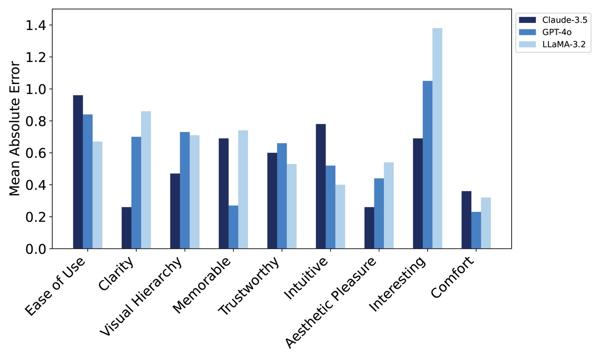
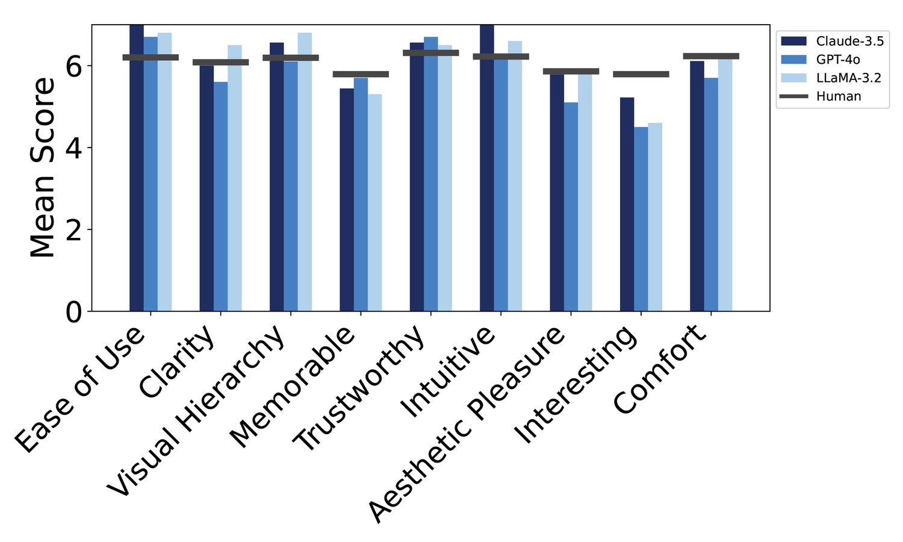
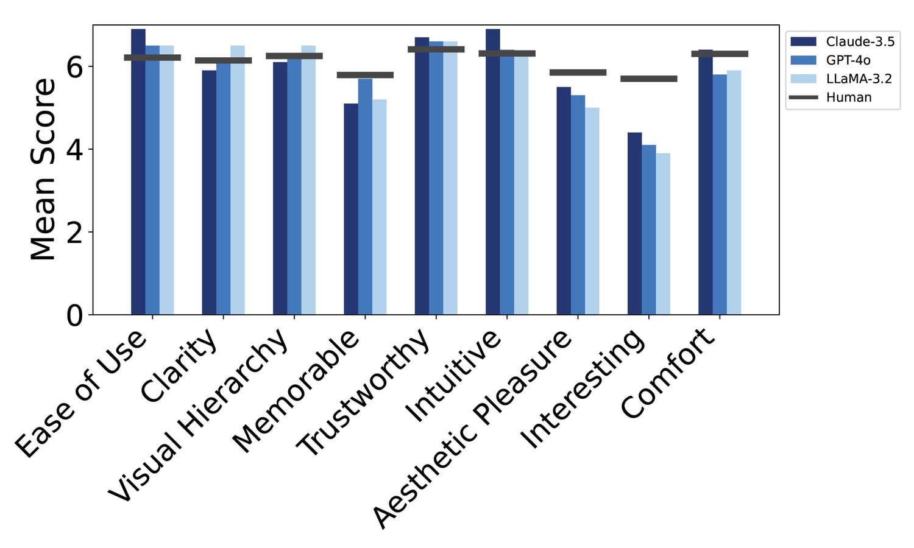
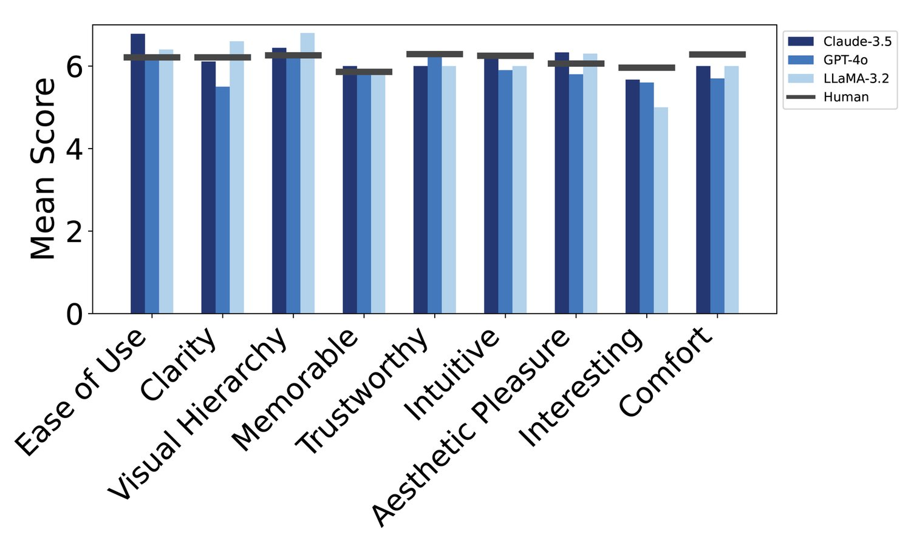

In an ideal design pipeline, user interface (UI) design is intertwined with user research to validate decisions, yet studies are often resource-constrained during early exploration. Recent advances in multimodal large language models (MLLMs) offer a promising opportunity to act as early evaluators, helping designers narrow options before formal testing. Unlike prior work that emphasizes user behavior in narrow domains such as e-commerce with metrics like clicks or conversions, we focus on subjective user evaluations across varied interfaces. We investigate whether MLLMs can mimic human preferences when evaluating individual UIs and comparing them. Using data from a crowdsourcing platform, we benchmark GPT-4o, Claude, and Llama across 30 interfaces and examine alignment with human judgments on multiple UI factors. Our results show that MLLMs approximate human preferences on some dimensions but diverge on others, underscoring both their potential and limitations in supplementing early UX research.
Design choices are inseparable from usability and experience. Nowhere is this more evident than in interface design, which shapes user perception of product usability and trustworthiness (Reinecke et al. 2013). It can even profoundly impact user productivity, and their emotional responses to products (Bhandari et al. 2017; Bailey et al. 1988). For this reason, user experience research to evaluate interface design is crucial for development (Steen et al. 2007; Baxter et al. 2015). Through research-informed iterations upon design choices, products can be refined to be more usable, engaging, and trustworthy.
However, many organizations face a persistent bottleneck, where too few researchers are available to keep pace with the growing scale of design and evaluation needs. In fact, according to a report from the Nielsen Norman Group, there is only one researcher for every five designers (Kaplan 2020). As a result, many organizations are forced to allocate their limited research capacity selectively, testing only a small subset of ideas rather than engaging in rapid, iterative evaluation, which has long been shown to significantly enhance design quality (Medlock 2018).
Existing work in this space simulates human behavior in domains like e-commerce and solely focuses on user metrics like click-through and conversion rates (Wang 2025), which can be limited because such metrics capture only general user outcomes and fail to provide diagnostic insights into design quality, usability, or user experience. To address this gap, artificial intelligence offers a promising avenue for building more efficient and scalable evaluation pipelines. Several existing works have examined how large language models (LLMs) can be used to evaluate UIs, such as generating feedback based on critiques and quality ratings from professional designers (Duan et al. 2024a; Duan et al. 2024b). While LLMs can be trained to generate feedback on UIs, prior work shows that they often struggle to faithfully capture human responses to visual interfaces (Wang et al. 2024; Stokes et al. 2025). We build on this work by systematically comparing LLM evaluations with human-generated UI evaluation data, in order to identify both reliable alignments and critical misalignments that highlight future research opportunities. Through this comparison, we identify the LLM prompting approach that most effectively approximates human judgments.
Further, the analysis presented in this paper, specifically how state-of-the-art models perform moderately well in UI judging tasks, can lay the groundwork for using multimodal large language models (MLLMs) to supplement early-stage user research. The results produced can be summarized in the following way: 1) Task 1, the Likert-scale task produced human and MLLM evaluation scores that, when compared to one another, show promise for MLLMs as UI judge approximators. The models we use (Claude 3.5 Sonnet, GPT-4o, and Llama-3.2-11B-Vision-Instruct) all have an accuracy score greater than 75%. Further, we evaluated performance using Pearson, Spearman, and Kendall tau correlation statistics that signify a moderately strong correlation between MLLM and human scores. 2) Task 2, the pairwise comparison task, reflected that MLLMs, when given questions that have large human score differences, can accurately simulate human data. In these pairwise experiments, we saw largely that models’ performance improved as the degree of difference between two screens increased. Given this, MLLMs are not at a stage where they should be seen as replacements for real-life human evaluation, but instead can be used to supplement early UI evaluations, especially in scenarios where UIs would remain untested.
Summary of Main Contributions. The key contributions of this work are as follows:
Novel MLLM as a judge evaluation tasks: We introduce a new task that can be used to evaluate whether large language multimodal models can approximate human preferences and provide reasonable justifications of those preferences in Likert scale evaluations of UIs and pairwise comparisons of real-world interfaces—moving beyond behavioral simulation to subjective UI alignment.
Absolute Human/MLLM UI judgments benchmark11 1 See supplementary materials for benchmark data: Task 1 (Section 4.1) produced a benchmark dataset of user interface evaluations, derived from both MLLM and human evaluators. This dataset was created by showing humans and three state-of-the-art MLLMs (Claude 3.5 Sonnet, GPT-4o, and Llama-3.2-11B-Vision-Instruct) the same set of UIs and then asking them to use a list of cognitive, perceptual, and emotional factors to evaluate them on a scale from 1-7.
Pairwise Human/MLLM UI judgments benchmark1: Task 2 (Section 4.2) produced a benchmark of pairwise MLLM and human evaluations of user interfaces. To create this data, we showed the same three state-of-the-art MLLMs two UIs at a time and prompted them to choose their preferred screen based on the same list of factors. The MLLM data was then compared to human pairwise data (generation techniques shown in Section 4.2) to calculate another dataset of agreement scores.
MLLM training data: The data produced in this study can be used as the benchmark to create a fine-tuned model. Training MLLMs and LLMs with novel datasets, such as the one created in this study, has proven to increase human accuracy in MLLM as a judge tasks (Kim et al. 2024; Ziegler et al. 2020; Lee et al. 2024).
MLLM as a UI judge use cases: Data analysis that suggests that MLLMs are a capable tool to supplement user interface testing for both absolute score testing and pairwise comparison to gauge perception at early stages. Our data suggest that teams with limited resources can use MLLMs to supplement, rather than fully replace, human UI testing.
The novelty of this research lies in the exploration of whether or not multimodal LLMs can evaluate visual user interfaces, not just text or other behavioral logs. Past LLM as a judge work has largely centered on comparing human and LLM textual evaluations (Das et al. 2025); we instead focus our work on visual UI evaluation. Through this study, we evaluate whether or not MLLMs are capable of emulating human UI judgments and report when they do so well and when they fail. In doing so, we explore to what degree MLLMs can be used as early-stage, low-cost approximators that act as a supplement, not as a replacement, to existing user research.
Extensive work has been done in the field of ’LLM as a Judge’, and within this paper, we aim to build upon the existing literature. LLM as a judge is a concept that can be applied to a myriad of different domains (Gu et al. 2024) and consists of using LLMs to evaluate the outcomes of complex tasks. They can do so effectively because they can quickly and efficiently process extensive datasets that can then be used to make an informed decision (Achiam et al. 2023). LLMs have been used as judges to evaluate everything from other models (Li et al. 2023; Wang et al. 2023; Zhang et al. 2023; Zheng et al. 2023), natural language and information (Wang et al. 2022; Ramamurthy et al. 2022; Ouyang et al. 2022), charts (Kim et al. 2025), and reasoning and thinking (Achiam et al. 2023; Team et al. 2023; Guo et al. 2025). Despite this, related literature suggests that using LLMs as judges can offer cost-cutting and a flexible alternative to human evaluation, but warns that they often lack consistency while suffering from issues pertaining to bias and reliability (Gu et al. 2024).
Across all studied domains, larger state-of-the art models (e.g., GPT-4o, Claude, etc.) perform better in LLM as a judge tasks than smaller models (Thakur et al. 2025; Zheng et al. 2023). Nonetheless, even well-performing models deviate by up to five points on a 10-point scale, and LLM evaluators are often excessively verbose, biased towards the existing positions, and prefer their own outputs (Liu et al. 2024; Panickssery et al. 2024). Given these limitations, LLMs often are capable as approximators, but are far from being human replacements in evaluation tasks.
We aim to distinguish our work by using a method that specifically explores how MLLMs can be used to evaluate two distinct UIs. In the context of this paper, we use a pairwise MLLM evaluation method (Liu et al. 2024), which consists of having the MLLM compare two different options and selecting which is better aligned with a predetermined criterion (Gu et al. 2024; Qin et al. 2024). This method closely aligns with A/B testing, commonly used in user research to compare two interfaces. We aim to run a pairwise test with human users looking at UIs and a Likert-scale LLM evaluation with the same interfaces to explore how close LLMs are to simulating human results.

As in many other domains, AI is becoming increasingly intertwined with user interface design and research (Bertão and Joo 2021; Luera et al. 2024). Designers and researchers alike are using MLLM to create and explore different interfaces for their respective products. Specifically in design research, LLMs are being used as assistants that are able to collaborate during UX evaluation sessions (Kuang et al. 2024). LLMs are occasionally being used to create synthetic data that emulates human users (Cao et al. 2025; Rosala and Moran 2024; Luera et al. 2025). For instance, Jansen et al. 2023 explain how LLMs can use simulated respondents to supplement the creation and analysis of survey research. Further, Hämäläinen et al. 2023 demonstrates that LLMs are capable of simulating user survey responses and creating responses that humans found plausible. Similarly, Li et al. 2024 found that in larger-scale market research surveys, LLM-generated survey responses achieved about a 75%-85% agreement with results from actual humans. However, this paper also highlights the importance of these models being trained on human data, as they cannot yet capture all of the nuances of human users.
There have been some work focused on some aspect of UI evaluations (Duan et al. 2024b; Duan et al. 2024a; Wu et al. 2024; Schoop et al. 2022). In Duan et al. 2024b, a Figma plugin was created by assessing GPT-4’s alignment with a set of design heuristics. Similarly, Duan et al. 2024a utilized a dataset of design critiques from several experienced designers to improve LLM-generated UI feedback by 55%. Meanwhile Wu et al. 2024 creates a design tool based on several datasets and shows it performs closely to human ground truth. In addition, Xiang et al. 2024 created an LLM tool used to evaluate smartwatch interfaces using simulated users. Our work differs from these works as we create a benchmark that compares several different state-of-the-art MLLMs to each other and to the human judgments. Further, the benchmark reflects how MLLMs perform in both pairwise and absolute scoring tasks based on a list of nine UI factors. Agent A/B (Wang 2025) asks a similar question and explores whether or not its own model can complete A/B UX tests. They train their agent specifically on UX click-through rate, focusing solely on the filters and menus of e-commerce websites. We aim to focus on a broader question, exploring UI judgments at a higher level while testing an assortment of widely used MLLMs (e.g., GPT-4o, Claude, Gemini) on an assortment of UI screens from different domains.
In order to quickly curate a diverse set of user interfaces, we used pre-made interfaces from a professional UI dataset22 2 https://reallygoodemails.com/. We selectively identified 30 UIs (24 professionally made and 6 made from scratch) across three different categories: browsing & discovery, confirmation & feedback, and communication & engagement (Figure 1) to cover a diverse set of UI components, aesthetic styles, content complexity, quality, and purposes. For instance, communication & engagement UIs typically have large images and eye-catching text in order to grab the attention of the user. Meanwhile, screens from the confirmation & feedback category typically have more text because their purpose is to quickly provide payment information, and catalogs often have pairs of images and text. We aimed to choose UIs that could work on both mobile and desktop devices and put constraints on the height so that most screens were about similar dimensions. For the most part, all UIs were extracted as is from the dataset. Since these screens were made by professional designers, we reduced the build quality of some screens to maintain a diverse dataset of both high and low quality designs. Since the UIs were collected from a professionally made dataset, we anticipated that most scores, both human and AI, would skew higher and more positively. For this reason, we designed our pairwise and ranking tasks with stronger granularity to detect signals in our measurements.
| Category | Factor | Question |
| Ease of Use | The UI looks easy to use. | |
| Cognitive | Clarity | The layout is uncluttered. |
| Visual Hierarchy | The UI has a clear visual hierarchy. | |
| Memorable | The UI is easily remembered. | |
| Perceptual | Trust | The UI appears trustworthy. |
| Intuitive | The UI is intuitive. | |
| Aesthetic Pleasure | The UI is aesthetically pleasing. | |
| Emotional | Interest | The UI is interesting. |
| Comfort | I feel comfortable with the UI. |
The UIs we gathered will be judged on nine UI factors on a Likert Scale from 1-7 (Kim et al. 2025). These factors were decided upon after consulting literature that explains how people react to designs and visualizations (Seeley 2012; Wang et al. 2019). The nine factors are clustered into three themes: Cognitive, Perceptual, and Emotional, following the design framework described by Seeley et al. (Seeley 2012).
Ease of use refers to how easy an interface appears to be. Ease of use can depend on factors like UI element placement, layout of a design, and design heuristics like the match between the system and the real world (Kumar et al. 2004; Nielsen 2005). A screen with high ease of use often does not make users think; its function is straightforward and obvious.
Clarity pertains how clear and uncluttered an interface looks. For example, if an interface has too many UI elements, it can overwhelm the user by increasing their cognitive load (Oviatt 2006; Darejeh et al. 2024). For this reason, (Nielsen 2005) highlights the importance of ensuring that designs remain minimalist in nature with enough white space. Doing so ensures the creation of a screen that is uncluttered and does not overwhelm the users.
Visual Hierarchy consists of ensuring that there is a clear order of importance between all of the UI elements on a screen (Wang 2024; Still 2018). Doing so decreases the user’s cognitive load, as their attention is caught quickly by whatever is largest, most central, and most important. An interface with good visual hierarchy will have elements that are sized and placed based on their perceived importance and relevance to the user.
Memorable pertains to how easily a UI can be remembered and speaks to the impact that a design has on a user. Memorability can be both negative and positive, and can be a result of attributes like color or recognizable elements (Borkin et al. 2013). Further, does the UI have a certain uniqueness that makes it stand out for the user. These elements, in total, contribute to making an interface memorable to the user.
Trust pertains to the amount of confidence that the user interface elicits within the user. Headlines, text content, as well as even how well an interface is put together, strongly contribute to trust in interface design. A trustworthy interface will make users feel confident in the content, often because they are designed intentionally and carefully (Zieglmeier and Lehene 2021).
Intuitive refers to how functional an interface looks to a user. Intuitiveness and functionality often are intertwined with user experience, so intuitiveness is a crucial factor when judging interfaces. An intuitive screen would be defined as one that users can look at and immediately understand the natural purpose and function (Bærentsen 2000; Blackler et al. 2005; Macaranas et al. 2015)
Aesthetic Pleasure refers to how visually attractive an interface is to a specific user. It is a largely subjective factor that often differs from user to user. For the most part, aesthetic pleasure is tightly tied by choices pertaining to color, font, content density, and overall structure. An aesthetically pleasing interface is able to integrate these elements well to create a larger design (Bollini 2017; Hartmann et al. 2008).
Interest in terms of UIs, pertains to how eye-catching, inviting, and captivating an interface is. Interesting interfaces are capable of catching a user’s attention and keeping it. An interesting interface may have UI elements such as unique fonts, mood-inducing colors, or sensational text headlines (Shneiderman 2004).
Comfort pertains to the overall satisfaction and degree to which an interface makes a user feel at ease while in use (Dave et al. 2023). Designs and interfaces can increase comfort by maintaining a clean, straightforward, and low cognitive load design. A comfortable design may be more tonally consistent and use common fonts and colors.

In total, we collected 15,000 responses from 500 participants using the online crowdsourcing platform Amazon’s Mechanical Turk. To ensure the quality of the dataset, we filtered for participants who had a greater than 98% approval rating and at least 500 responses to take part in our study. In total, we received feedback on 30 UIs and we asked for 500 unique responses from each. From there, we asked participants to evaluate each UI based on the nine UI Factors (Table 1). Each evaluation was expected to take about 45 seconds to a minute to complete. In total, it cost $75 to get 500 human evaluations for each UI. Before taxes and fees, the total cost of this part of the study was $2,250.
Each UI was presented as a standalone task to minimize order effects, and participants evaluated each UI in two stages. First, participants responded to nine Likert scale questions, one corresponding to each of the UI Factors (see Table 1). Each question asked participants to indicate their level of agreement on a 7-point scale (1 = strongly disagree, 7 = strongly agree). To support their evaluation, participants were able to resize the UI during this stage, allowing them to view it while responding to the questions. Next, participants were asked to provide a textual explanation describing the rationale behind their ratings. This qualitative input allowed for deeper insight into participants’ reactions to each UI.
We compiled a dataset containing each worker’s ID, the corresponding image ID, the UI’s domain, and the participant’s scores for each of the nine evaluation factors. To ensure consistency across the benchmark, factor and domain names were standardized to align with the terminology used throughout the paper. We applied several data pre-processing steps to ensure data quality. We excluded responses that were completed in less than 45 seconds, based on the rationale that a thoughtful engagement with the task requires at least that amount of time. Additionally, we removed responses that were incomplete or that contained duplicate scores submitted by the same user. Further, we removed data for screens that were not professionally made to maintain consistent data. After the exclusion procedure, we are left with 9,296 human responses. Table 2 presents the mean scores and standard deviations for each of the nine UI factors, as rated by human participants, split by domain. The rightmost column shows the overall average score for each factor across all domains, while the bottom row reports the average score for each domain across all factors. We then compared these human-generated ratings to scores produced by multimodal large language models (MLLMs) to evaluate alignment and divergence in trust-related perceptions.
| Domains | |||||
| Factor | Evaluator | Browsing & Disc. | Conf. & Feedback | Comm. & Engage. | All UIs |
| Ease of Use | Human | 6.20 (1.08) | 6.21 (1.10) | 6.21 (1.07) | 6.21 (1.09) |
| Claude-3.5 | 7.00 (0.00) | 6.90 (0.32) | 6.78 (0.67) | 6.89 (0.42) | |
| GPT-4o | 6.70 (0.67) | 6.50 (0.97) | 6.20 (1.32) | 6.47 (1.01) | |
| Llama-3.2 | 6.80 (0.42) | 6.50 (0.53) | 6.40 (0.70) | 6.57 (0.57) | |
| Clarity | Human | 6.08 (1.20) | 6.14 (1.21) | 6.21 (1.16) | 6.14 (1.19) |
| Claude-3.5 | 6.00 (0.50) | 5.90 (0.57) | 6.11 (0.78) | 6.00 (0.61) | |
| GPT-4o | 5.60 (1.71) | 6.10 (1.73) | 5.50 (1.96) | 5.73 (1.76) | |
| Llama-3.2 | 6.50 (0.85) | 6.50 (0.71) | 6.60 (0.70) | 6.53 (0.73) | |
| Visual Hierarchy | Human | 6.19 (1.08) | 6.25 (1.06) | 6.26 (1.04) | 6.23 (1.06) |
| Claude-3.5 | 6.56 (0.53) | 6.10 (0.57) | 6.44 (0.53) | 6.37 (0.56) | |
| GPT-4o | 6.10 (1.29) | 6.30 (1.34) | 6.30 (1.34) | 6.23 (1.28) | |
| Llama-3.2 | 6.80 (0.42) | 6.50 (0.53) | 6.80 (0.42) | 6.70 (0.47) | |
| Memorable | Human | 5.79 (0.97) | 5.79 (0.97) | 5.86 (0.91) | 5.81 (0.95) |
| Claude-3.5 | 5.44 (0.73) | 5.10 (0.57) | 6.00 (0.87) | 5.51 (0.79) | |
| GPT-4o | 5.70 (0.67) | 5.70 (0.67) | 5.80 (0.42) | 5.73 (0.58) | |
| Llama-3.2 | 5.30 (0.48) | 5.20 (0.42) | 5.80 (0.92) | 5.43 (0.68) | |
| Trust | Human | 6.31 (1.02) | 6.41 (0.99) | 6.29 (1.01) | 6.34 (1.01) |
| Claude-3.5 | 6.56 (0.53) | 6.70 (0.48) | 6.00 (0.50) | 6.42 (0.57) | |
| GPT-4o | 6.70 (0.67) | 6.60 (0.70) | 6.30 (0.67) | 6.53 (0.68) | |
| Llama-3.2 | 6.50 (0.53) | 6.60 (0.70) | 6.00 (0.82) | 6.37 (0.72) | |
| Intuitive | Human | 6.22 (1.07) | 6.31 (1.04) | 6.25 (1.03) | 6.26 (1.05) |
| Claude-3.5 | 7.00 (0.00) | 6.90 (0.32) | 6.22 (0.67) | 6.71 (0.53) | |
| GPT-4o | 6.20 (0.92) | 6.40 (0.97) | 5.90 (1.20) | 6.17 (1.02) | |
| Llama-3.2 | 6.60 (0.52) | 6.30 (0.48) | 6.00 (0.47) | 6.30 (0.53) | |
| Aesthetic Pleasure | Human | 5.86 (0.91) | 5.85 (0.93) | 6.06 (0.98) | 5.92 (0.94) |
| Claude-3.5 | 5.78 (0.44) | 5.50 (1.08) | 6.33 (0.71) | 5.87 (0.85) | |
| GPT-4o | 5.10 (1.45) | 5.30 (1.57) | 5.80 (1.23) | 5.40 (1.40) | |
| Llama-3.2 | 5.80 (0.63) | 5.00 (1.05) | 6.30 (0.82) | 5.70 (0.99) | |
| Interesting | Human | 5.79 (0.99) | 5.70 (1.08) | 5.96 (0.97) | 5.82 (1.02) |
| Claude-3.5 | 5.22 (0.44) | 4.40 (0.70) | 5.67 (0.50) | 5.10 (0.77) | |
| GPT-4o | 4.50 (0.71) | 4.10 (0.57) | 5.60 (0.84) | 4.73 (0.94) | |
| Llama-3.2 | 4.60 (0.70) | 3.90 (0.99) | 5.00 (0.94) | 4.50 (0.97) | |
| Comfort | Human | 6.23 (1.03) | 6.30 (1.03) | 6.28 (1.00) | 6.27 (1.02) |
| Claude-3.5 | 6.11 (0.33) | 6.40 (0.70) | 6.00 (0.00) | 6.17 (0.48) | |
| GPT-4o | 5.70 (0.67) | 5.80 (1.14) | 5.70 (0.95) | 5.73 (0.91) | |
| Llama-3.2 | 6.30 (0.67) | 5.90 (0.57) | 6.00 (0.47) | 6.07 (0.58) | |
| All | Human | 6.06 (1.06) | 6.10 (1.08) | 6.13 (1.03) | 6.10 (1.06) |
| Claude-3.5 | 6.14 (0.73) | 5.97 (0.97) | 6.14 (0.65) | 6.08 (0.80) | |
| GPT-4o | 5.70 (1.21) | 5.75 (1.31) | 5.80 (1.15) | 5.75 (1.22) | |
| Llama-3.2 | 6.07 (0.91) | 5.80 (1.07) | 6.07 (0.82) | 5.98 (0.95) | |
We evaluate the efficacy of MLLMs in assessing UIs by comparing their judgments to human evaluations collected through a crowdsourcing study (Section 3). Our analysis proceeds in two parts. In Section 4.1, we examine how well MLLMs predict absolute human scores (prompt shown in Figure 7), assessing both the accuracy of these predictions and their utility for estimating user preferences. In Section 4.2, we analyze pairwise comparisons of UIs based on human data, and evaluate how closely MLLM predictions of these comparisons align with human preferences (prompt shown in Figure 8). The analysis is conducted over all UI factors in Table 1. To avoid bias, and ensure generality and robustness of our findings, we leverage three diverse MLLMs, including GPT-4o, Claude 3.5 Sonnet, and Llama-3.2-11B-Vision.
We conduct three studies evaluating how closely MLLMs’ responses to UIs resemble those of humans. In Section 4.1.1, we first analyze MLLM and human scores separately. Results suggest that MLLMs are mostly well aligned to humans, with a few factors where they may significantly under or over predict human scores. In Section 4.1.2, we analyze prediction errors of MLLMs using four metrics: MSE, MAE, accuracy, and -accuracy. Results suggest that MLLMs well-predict human responses, with Claude being the best judge overall. MLLMs on average overestimated factors like Ease of Use. While consistently underestimating factors like Aesthetic Pleasure, Interesting, and Comfort. Meanwhile, models showed they could reasonably predict scores (within 0.50 Likert points) for factors such as Clarity, Visual Hierarchy, Memorable, and Trustworthy, Intuitive. Finally in Section 4.1.3, we analyze how well MLLM scores predict the ranking of UIs by humans. The factor scan be well predicted, and the best judge overall is Llama. To reduce the randomness in our analysis due to random MLLM scores, we evaluate each UI and factor by each MLLM times and then take the median score. Our MLLM prompt is reported in Figure 7 in the Appendix.
We start by comparing individual human and MLLM scores. For each UI and factor, we report averaged human scores and median MLLM scores. These averages represent an average perception of a given UI in a given factor. We also included average scores from humans and MLLMs aggregated by the three domains and all UIs, see Table 2.
We make several observations. First, MLLM judges align reasonably well with humans. As an example, note the average human and MLLM scores over all factors and UIs in Table 2 (last four rows and last column). The human score is , whereas Claude predicts , GPT-4o predicts , and Llama predicts . Therefore, all MLLM scores are within of the human scores. Since this is significantly less than the range of our -point Likert scale, we conclude that MLLMs reasonably mimic human scores. Second, MLLM scores are often closer to each other than those of humans, as indicated by smaller standard deviations of the scores in Table 2. We note this specifically for Claude and Llama. GPT-4o has sometimes a larger standard deviation and sometimes smaller.
When considering individual factors in Table 2, MLLMs tend to perform well on cognitive and perceptual factors. For instance, the human score for Trustworthy is , whereas Claude predicts , GPT-4o predicts , and Llama predicts . This is the only factor where all MLLM scores are within of the human score. MLLMs also perform well on Visual Hierarchy, where all MLLM scores are within of the human scores. The human score is , while Claude predicts , GPT-4o predicts , and Llama predicts . Overall, MLLMs likely approximate these scores effectively because the factors have concrete cues in the UI. These factors are correlated with layout, reassuring designs and phrases, and spacing; all of which MLLMs can gather from the UI screenshots.
MLLMs struggle with some emotional factors, such as Interesting. Specifically, all MLLM scores of this factor underestimate human scores. The human score is , whereas Claude predicts , GPT-4o predicts , and Llama predicts . The MLLMs likely struggle with this and other factors like Ease of Use because they are more difficult to quantify for MLLMs. Factors like ease of use are highly tied a users technical literacy and cannot be inferred from visual cues alone (Muzaffar et al. 2011; Hinton 2012).
| Factor | Model | MSE | MAE | Acc. | Acc. | Pearson | Spearman | Kendall | |
| Cognitive | Ease of Use | Claude-3.5 | 0.83 | 0.87 | 0.42 | 0.76 | -0.05 (0.820) | -0.32 (0.152) | -0.25 (0.163) |
| GPT-4o | 0.56 | 0.72 | 0.42 | 0.77 | 0.19 (0.380) | 0.14 (0.529) | 0.10 (0.514) | ||
| Llama-3.2 | 0.37 | 0.54 | 0.40 | 0.79 | 0.23 (0.283) | 0.20 (0.348) | 0.13 (0.396) | ||
| Clarity | Claude-3.5 | 0.10 | 0.22 | 0.33 | 0.81 | 0.21 (0.341) | 0.22 (0.324) | 0.18 (0.292) | |
| GPT-4o | 0.48 | 0.63 | 0.38 | 0.69 | -0.07 (0.744) | 0.06 (0.788) | 0.05 (0.764) | ||
| Llama-3.2 | 0.45 | 0.58 | 0.38 | 0.75 | 0.34 (0.100) | 0.27 (0.198) | 0.19 (0.202) | ||
| Visual Hierarchy | Claude-3.5 | 0.26 | 0.41 | 0.37 | 0.78 | -0.14 (0.535) | -0.06 (0.779) | -0.06 (0.710) | |
| GPT-4o | 0.43 | 0.60 | 0.40 | 0.75 | 0.02 (0.929) | -0.04 (0.845) | -0.05 (0.744) | ||
| Llama-3.2 | 0.38 | 0.56 | 0.42 | 0.78 | 0.38 (0.068) | 0.54 (0.007) | 0.41 (0.006) | ||
| Perceptual | Memorable | Claude-3.5 | 0.36 | 0.53 | 0.28 | 0.72 | 0.59 (0.004) | 0.39 (0.069) | 0.27 (0.092) |
| GPT-4o | 0.08 | 0.23 | 0.37 | 0.67 | 0.41 (0.046) | 0.32 (0.131) | 0.24 (0.115) | ||
| Llama-3.2 | 0.34 | 0.52 | 0.30 | 0.75 | 0.47 (0.019) | 0.46 (0.023) | 0.36 (0.024) | ||
| Trustworthy | Claude-3.5 | 0.40 | 0.58 | 0.44 | 0.80 | 0.10 (0.652) | 0.13 (0.573) | 0.08 (0.638) | |
| GPT-4o | 0.27 | 0.45 | 0.44 | 0.82 | 0.21 (0.320) | 0.00 (0.995) | -0.01 (0.940) | ||
| Llama-3.2 | 0.32 | 0.48 | 0.43 | 0.84 | 0.40 (0.052) | 0.33 (0.116) | 0.24 (0.135) | ||
| Intuitive | Claude-3.5 | 0.58 | 0.71 | 0.43 | 0.78 | -0.02 (0.944) | 0.06 (0.794) | 0.03 (0.843) | |
| GPT-4o | 0.20 | 0.38 | 0.40 | 0.79 | 0.24 (0.254) | 0.22 (0.296) | 0.17 (0.270) | ||
| Llama-3.2 | 0.13 | 0.28 | 0.36 | 0.81 | 0.02 (0.919) | -0.18 (0.410) | -0.14 (0.340) | ||
| Emotional | Aesthetic Pleasure | Claude-3.5 | 0.16 | 0.31 | 0.49 | 0.85 | 0.62 (<0.001) | 0.62 (<0.001) | 0.49 (<0.001) |
| GPT-4o | 0.24 | 0.38 | 0.41 | 0.76 | 0.21 (0.335) | 0.19 (0.384) | 0.10 (0.513) | ||
| Llama-3.2 | 0.38 | 0.47 | 0.38 | 0.76 | 0.51 (0.012) | 0.55 (0.005) | 0.42 (0.005) | ||
| Interesting | Claude-3.5 | 0.51 | 0.62 | 0.26 | 0.62 | 0.85 (<0.001) | 0.82 (<0.001) | 0.69 (<0.001) | |
| GPT-4o | 1.38 | 1.09 | 0.14 | 0.43 | 0.63 (<0.001) | 0.59 (0.002) | 0.47 (0.002) | ||
| Llama-3.2 | 1.78 | 1.19 | 0.16 | 0.37 | 0.61 (0.002) | 0.60 (0.002) | 0.44 (0.003) | ||
| Comfort | Claude-3.5 | 0.17 | 0.29 | 0.36 | 0.85 | -0.12 (0.583) | -0.10 (0.664) | -0.05 (0.743) | |
| GPT-4o | 0.08 | 0.24 | 0.35 | 0.78 | -0.29 (0.171) | -0.32 (0.124) | -0.25 (0.096) | ||
| Llama-3.2 | 0.13 | 0.25 | 0.34 | 0.82 | 0.22 (0.310) | 0.24 (0.251) | 0.18 (0.224) | ||
| All | Claude-3.5 | 0.37 | 0.51 | 0.38 | 0.77 | 0.69 (<0.001) | 0.58 (<0.001) | 0.44 (<0.001) | |
| GPT-4o | 0.41 | 0.52 | 0.37 | 0.72 | 0.70 (<0.001) | 0.60 (<0.001) | 0.43 (<0.001) | ||
| Llama-3.2 | 0.48 | 0.54 | 0.35 | 0.74 | 0.73 (<0.001) | 0.63 (<0.001) | 0.47 (<0.001) |
Next we analyze how well MLLMs predict human scores. We consider four error metrics: mean squared error (MSE), mean absolute error (MAE), accuracy, and -accuracy. All metrics are computed on average human and median MLLM scores, for each UI and factor, as in Section 4.1.1. The MSE is the mean of squared differences between MLLM and human scores, over all UIs and for a given factor. The MAE is the mean of absolute differences between MLLM and human scores, over all UIs and for a given factor. The accuracy is the fraction of MLLM scores that matches rounded human scores, over all UIs and for a given factor. The -accuracy is the fraction of MLLM scores that matches rounded human scores within , over all UIs and for a given factor. The four metrics provide different views on our results. The MSE and MAE measure mean deviations in the MLLM and human scores, with the former penalizing larger deviations more. The accuracy measures the probability that the MLLM score matches the human score. The -accuracy measures the probability of a sufficiently close match. All metrics are reported in Table 3.
MSE and MAE of some factors are low, which indicates predictability. For instance, all MSEs of Comfort are lower than and the lowest of all factors, and all its MAEs are lower than and the lowest of all factors. On the other hand, MSE and MAE of some factors are high, which indicates unpredictability. For instance, both MSEs and MAEs of Interesting are higher than those of the other factors. Most other scores fall somewhere in the middle, with factors like Aesthetic Pleasure having lower errors and factors like Ease of Use having higher errors.
The average accuracy of MLLMs over all factors ranges from to , with Claude having the highest accuracy of . The average -accuracy is significantly higher, from to . Again, the highest value is achieved by Claude. While the accuracy can vary a lot between different factors, we note that the -accuracy is relatively stable. In terms of individual factors, Claude is either the best MLLM or performs similarly to it. The model is followed by Llama while GPT-4o performs slightly worse.
Next, we analyze how well MLLMs predict the ranking of UIs by humans. All metrics are computed on average human and median MLLM scores, for each UI and factor, as in Section 4.1.1. The average scores are calculated by aggregating all evaluator scores by factor and UI, and taking the mean of those values. For ranking scores, we consider three most popular metrics of correlation: Pearson correlation coefficient, Spearman’s , and Kendall’s . The Pearson correlation coefficient is the covariance of MLLM and human scores divided by their standard deviations, over all UIs and for a given factor. The metric is in , where is the maximum positive correlation, is the maximum negative correlation, and means no correlations. Spearman’s is the Pearson correlation coefficient applied to ranks of MLLM and human scores. Finally, Kendall’s measures the pairwise agreement between scores ordered by MLLMs and humans, over all pairs of UIs and for a given factor. The metric is in , where is the maximum positive correlation, is the maximum negative correlation, and means no correlations. All metrics are reported in Table 3.
Table 3 shows high correlation coefficients for multiple factors: Memorable, Aesthetic Pleasure, and Interesting. On average, Llama has the highest correlation coefficients, followed by Claude and then GPT-4o. Some results are quite strong. For instance, the Kendall’s of , , and means that the MLLM agrees with the human pairwise ranking , , and of the time, respectively.
Interestingly, high correlation metrics do not necessarily correlate with low prediction errors. As an example, factor Interesting has the highest MSE and MAE of all factors, and also low accuracy and -accuracy. At the same time, it has the highest correlation metrics for all MLLMs. This reveals that although MLLMs cannot reliably predict the human score, they are effective at capturing relative preferences and thus useful for ranking UIs. This observation motivated us to take a deeper look at pairwise UI comparisons to examine whether these models are genuinely useful for ranking or preference-based tasks (Section 4.2). The opposite can also be true. Factor Comfort has the lowest MSE and MAE of all factors, and also high -accuracy. At the same time, all correlation metrics are close to zero. To conclude, both prediction errors and ranking metrics provide different views on predicted scores, and therefore we discuss both.
In Section 4.1, we evaluated the ability of MLLMs to predict human scores and their utility for estimating human preferences. In this section, we evaluate the ability of MLLMs to directly estimate human preferences. In Section 4.2.1, we show that MLLMs can predict human preferences in some factors better than in others, as in Table 3. In Section 4.2.2, we show that human preferences are easier to predict if the compared UIs are judged as more different by humans.
| Model | Ease | Clar | Vis | Mem | Trust | Intui | Aesth | Intrst | Comf | ALL |
| Claude-3.5 | 47.01 | 54.98 | 61.35 | 61.75 | 61.75 | 58.17 | 68.53 | 78.49 | 47.81 | 59.98 |
| GPT-4o | 50.99 | 54.55 | 56.92 | 64.82 | 58.89 | 59.68 | 64.03 | 75.10 | 51.38 | 59.60 |
| Llama-3.2 | 51.57 | 52.02 | 53.81 | 54.26 | 56.05 | 51.12 | 52.47 | 52.47 | 52.91 | 52.96 |

This experiment is conducted as follows. First, we estimate the ground-truth human preference using the average human scores in Section 4.1.1. Specifically, for each pair of UIs for a given factor, we take the average human scores and say that UI is preferred to UI if the average score of the former is higher than that of the latter. Second, we obtain the preference of the MLLM judge. Specifically, for each pair of UIs, we run the judge with the prompt in Figure 8 and record its preference in each of the nine UI factors. Finally, we say that the judge agrees with the human preference over two UIs in a given factor if it prefers the same UI. The accuracy of the MLLM judge in a given factor is the percentage of UI pairs with agreement, and the overall accuracy is the average of these accuracies.
All accuracies are reported in Table 4. They can vary drastically among the factors. GPT-4o and Claude both perform best when asked which UI is more Interesting, with accuracies around and , respectively. This is similar to Table 3, where factor Interesting has the highest correlation coefficients and thus is highly predictable. All models perform poorly when judging Ease of Use, with the accuracies around and effectively indicating unpredictability. This is similar to Table 3, where factor Ease of Use has near-zero correlation coefficients. Both Claude and GPT-4o stand out in some areas while falling short in others. Llama is close to random across all factors. The overall accuracy reflects this, with both Claude and GPT-4o being close to and Llama being close to a random .
Although many of our UIs are professionally designed, humans can judge them very differently depending on the factor. This motivated us to study whether human preferences are easier to predict if the compared UIs are judged as more different by humans. Specifically, for all UI pairs and factors, we compute the absolute difference of their average human scores and bin them. For each bin, we report the accuracy of the MLLM judge to predict the human preference. We expect MLLMs to struggle more when predicting preferences for UI pairs that humans judged as more similar, but to perform more accurately when humans expressed a clear preference with larger rating differences.
Our results are reported in Figure 3. When the difference in human preferences between UI pairs is small, the accuracy of all MLLM judges is only slightly above . This suggests that when humans expressed similar levels of preference for the two UIs, their choices were effectively unpredictable by MLLMs. However, as the human preference score difference increases, suggesting that the UIs are more distinguishable for humans, the accuracy of the MLLM judges increases. GPT-4o and Claude have the largest increases, starting near and ending close to and , respectively. Llama performs poorly, and its accuracy increases to only about .
Across all three models, the benchmark data illustrate that models can achieve reasonably high accuracy within for absolute score tasks (Table 4) and GPT and Claude perform reasonably well in pairwise tasks where the two UIs have a significant degree of difference (Figure 3). However, the same models perform less effectively in terms of exact accuracy (Claude 48% and GPT 40%) and when there is a small degree of difference in pairwise tasks. In fact, the models performed near random on pairwise tasks with small degrees of difference. Further, MAE scores ranged from 0.53 to 0.64, and MSE scores ranged from 0.44 to 0.66. While these scores are moderate, they are also significant enough to reflect that state of the art models cannot fully replace human evaluation.
For this reason, it is recommended that MLLMs be seen as UI testing approximators, not replacements. Essentially, given the results, MLLMs should be used to supplement existing research or be used in scenarios where research would not otherwise be used. The results of this study reflect that MLLMs struggled on fine-grained UI evaluation tasks. However, MLLMs have reasonable accuracy and reliability in generalized evaluations and when comparing UIs with larger disparities. Furthermore, results should be seen as approximations and are capable of giving designers general direction. However, they are not capable of acting as complete replacements for real human research.
Given the moderate strength in human emulating UI tasks, MLLMs show decent promise in acting as a proxy for early user testing. Given that overall correlation coefficients across all models (Table 4) were relatively decent, MLLMs show moderate promise for low-stakes user research. More specifically, designers should use them early in the design process in situations where they may be rapidly iterating through several different designs and not have the research resources to test and compare every single design. As seen in the results, MLLMs perform moderately well in these use cases as they can accurately score designs within Likert scale point. Furthermore, as seen in the pairwise testing, they are also able to strongly predict human preferences when there is a large difference in human scores. For this reason, MLLMs can responsibly be used in these early design process situations in order to get a sense of direction on early UI iterations.
However, these results also suggest that MLLMs are not accurate enough to be used as a permanent or effective standout when exact results are needed. There was significant variation when looking at the results on the factor level, and it is clear that these models are not precise across most factors. For this reason, it is not recommended that these models be used for validation testing towards the end of the design process or high-stakes user research scenarios.
Another future direction for this work would be to create a fine-tuned model with stronger factor sensitivity than the state-of-the-art models presented in this study. Considering that the state-of-the-art models mostly struggled with several traits like ease-of-use and even clarity, there is clearly a gap in how these models handle different traits. This gap suggests an opportunity to create a fine-tuned model based on the benchmark scores that will be better able to predict and replicate human scores. This benchmark can be utilized in tandem with reinforcement learning with human feedback (RLHF) on factor-specific data or even chain of thought prompting. Given this, the fine-tuned tool would be more useful in general, being more applicable and reliable in the design process. Furthermore, the data could be used to fine-tune prompts used. Doing so would require less lift than creating a fine-tuned model while also potentially making a significant difference in the evaluation quality.
While these results show encouraging reasons for using MLLMs as a UI judge, it should not be used to justify the complete replacement of human testing. In fact, it should do the opposite and reinforce the need for real human testing. The results presented expose key limitation that should give any design team pause when asking whether they should completely rely on MLLMs for user interface validation.
Again, we emphasize that these results reflect that MLLMs should be used solely for supplemental use. It should be used to fill gaps where no user research exists, not to replace real human research and testing. MLLMs should be seen as a source of low-cost, rapid iterative evaluations when it is not feasible to perform extensive user research. This will enable designers to identify common trends and larger flaws earlier on in the design process.
Despite the seemingly negative ethical considerations, there is a strong reason for why this method should be adopted. There is significant potential for using this dataset to increase design democratization for junior designers with little to no access to high-end design research. Specifically, there is a large opportunity for designers to use MLLMs to "fine-tune" their designs, using MLLMs as a sanity check of their design intuitions and a learning opportunity.
Building on our benchmark, we are extremely excited by the opportunities to expand AI’s capabilities as a judge for interface testing. Most notably, this benchmark can support fine-tuned models or alignment training—particularly reinforcement learning from human feedback (RLHF). Whether used alone or with similar datasets, it can help create models that better supplement user research. There is also the opportunity to expand the benchmark by adding more screens and tasks. For instance, this study focused on mobile and desktop UIs, but future work could include tablets, TVs, consoles, and more. A broader set of UIs would enable a more holistic benchmark. We also see potential to study more models and prompting methods—this work focused on GPT-4o, Claude 3.5 Sonnet, and Llama 3.2, but future studies could explore Gemini, Qwen, GPT-4o mini, and others using the same framework. Prompting strategies like chain-of-thought and few-shot learning also merit further exploration. Finally, because UI design is iterative, future work could compare versions of the same design, measuring how small changes—like color, text, or layout—affect human and MLLM judgments.
While our findings reveal MLLM’s capability to emulate human UI perceptions to a moderate degree, several limitations of this study still persist. Firstly, the entirety of both the human and Firstly, the entirety of both the human and MLLMs tasks was performed on static user interfaces. Secondly, the screens used in the study were primarily professionally made within the context of Western design standards. We leave it to future extending our line of work to the diverse, dynamic interactions that usually occur in user research.
To evaluate the effectiveness of MLLMs as UI judges, this study facilitated the collection and testing of a set of user interfaces. The same UI studies were given to both human and MLLM evaluators, and the results were compared to analyze to what degree MLLM evaluators can emulate human results. This study was conducted using two unique tasks: 1) an absolute scoring task using a 1-7 Likert scale and 2) a pairwise evaluation. For task 1, the findings reveal that when asked to evaluate screens at an overall level, MLLMs do moderately well. However, when asked to judge them based on specific factors or criteria, they tend to struggle. For task 2, the MLLMs again performed reasonably on the pairwise comparisons. Naturally, MLLM evaluators performed better on pairwise questions that compared two screens that have a higher degree of difference. Lastly, we accumulated the results from these tests into a benchmark to be used in future studies. Future work offers the opportunity to use the benchmark to create a fine-tuned model that would perform better at UI judgment tasks compared to state-of-the-art models. For this reason, we recommend that MLLMs are used to supplement early, low stakes user research – not replace it. Finally, the benchmark provided in this paper is capable of laying the groundwork for future studies that can better explore MLLM as a UI judge.
Building on our benchmark, we are extremely excited by the possible opportunities to expand on the capabilities of MLLM as a judge for interface testing. Most notably, this benchmark can be used to create a fine-tuned model or in alignment training. Reinforcement learning from human feedback (RLHF) is a specialized fine-tuning technique that would most align with this benchmark. Whether using this benchmark in isolation or in tandem with other similar datasets, there is an opportunity to create a fine-tuned model that will better supplement user research.

Secondly, there is also the opportunity to expand on the benchmark by adding more screens and/or more tasks. Increasing the amount and diversity of screens can uncover more trends that were not uncovered in this study. For example, this study focused on mobile and desktop first UIs, but UIs exist for tablets, televisions, entertainment consoles, and many other devices. Expanding the benchmark to include a diverse set of UIs will create a more holistic benchmark. Furthermore, user research is not limited to just Likert-scale scores and A/B testing. The benchmark can be expanded by adding usability studies, surveys, need-finding, etc. Expanding the data in such a way will further test MLLM’s efficacy in UI tasks and create a more expansive benchmark for fine-tuned models.

There is also the opportunity to study the efficacy of more models and prompting methods. This study revolved mostly around GPT-4o, Claude 3.5 Sonnet, and Llama 3.2; running the same tasks on other models like Google’s Gemini, Qwen, or even GPT-4o mini could unveil even further outcomes and trends. Future studies can utilize the framework established in this study to test a wider range of models. Similarly, there is an opportunity to explore the role that prompting strategies can play in MLLM as a UI judge. For this reason, future studies can explore chain-of-thought and few shot learning methods to explore the impact that these methods have on outputs.
Finally, considering that UI design is an iterative process, there is an opportunity for future studies to compare UI designs to their earlier iterations. In the pairwise portion of the study, different UI designs were compared with one another. Instead, there is an opportunity to explore the impact of changing a single color, text, or even the layout, and comparing it with an earlier iteration to measure the degree that small changes within the same design change human and MLLM judgments.



The additional results shown reflect further visualizations of data presented in the main body of the paper. Figure 5 and Figure 6 represent how well MLLMs did on Task 1, with the former representing the mean absolute error (MAE) and the latter being a visual summary of Table 2. Furthermore works like Figure 4, represent potential ablation study data. Here we also present the prompts used to have the MLLMs evaluate the UIs in the same way that the humans did. Figure 7 asks the MLLMs to evaluate the UIs on a 7-point Likert scale on the UI factors presented in Table 1. Figure 8 prompts the MLLMs to compare two UIs to one another on the aforementioned factors and choos a "winner."